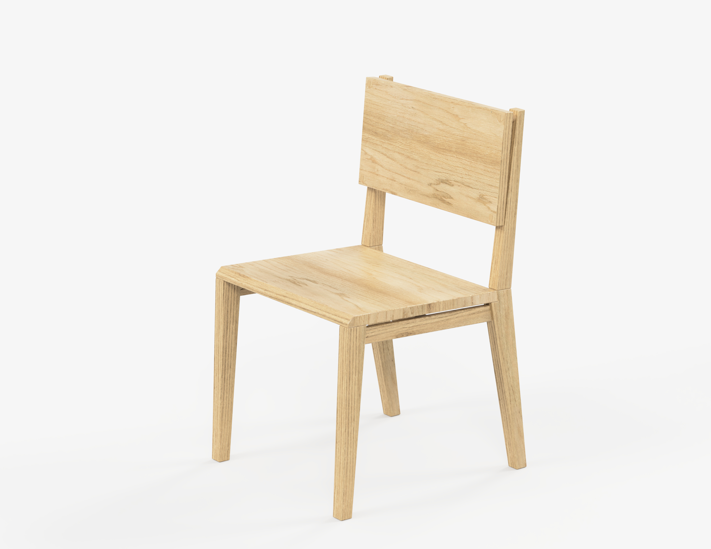
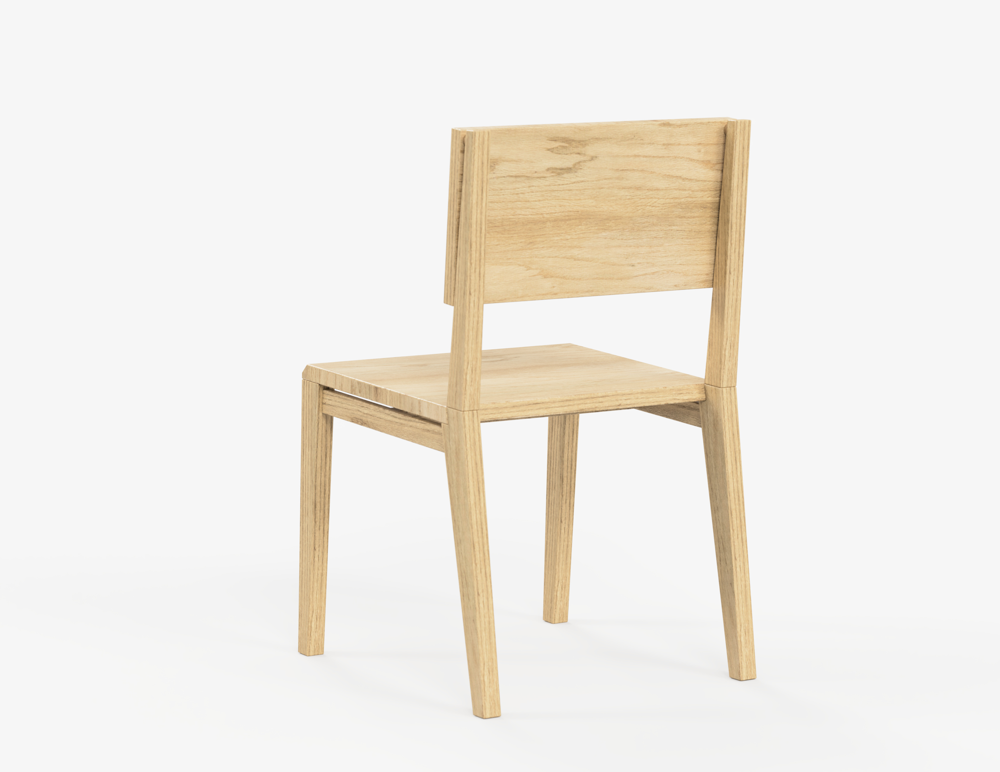
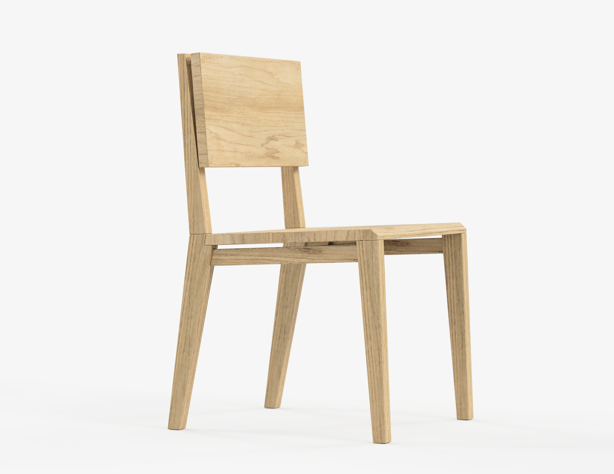
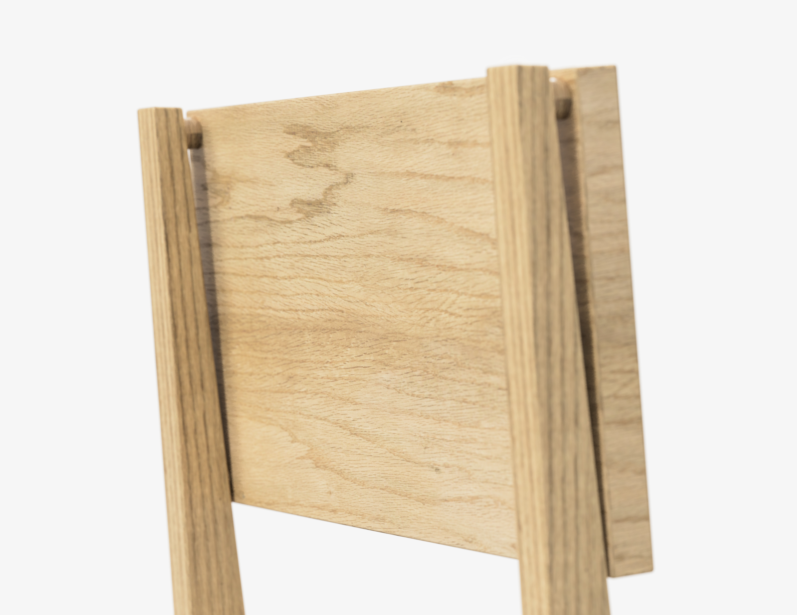

Chair Straight
Projekt został stworzony w ramach stażu w firmie This is Wood w Gdańsku




Krzesło Straight to nowoczesne krzesło, charakteryzujące się prostymi kształtami, które pozwalają w bardzo łatwy sposób dopasować się do każdego wnętrza. Stworzone zostało z litego drewna dębu, w harmonii z naturą. Skupienie się w pełni na drewnie sprawia, że krzesło jest w 100% produktem ekologicznym. W pełni przemyślany design daje efekt w postaci wyjątkowych detali.